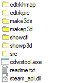

SDK tools directory
|
cdtrkhmap |
This tools allows to extract heightmap from a given track. |
|
cdtrkpic |
This tools is made to manage track's embedded picture. |
|
make3ds |
This tools converts crashday's .p3d model files into Autodesk 3D Studio .3ds files. |
|
makep3d |
This tools converts .3ds models into .p3d files. |
|
showcfl |
This tools is made to view Crashday's track piece .cfl-files with the in-game engine. Its purpose is to show the track piece in final in-game look, including vegetation and Level Of Detail. Moreover, the tool allows to render AI nodes and link information |
|
showp3d |
This is an utility designed to view any Crashday .p3d model file using the in-game engine. |
|
cdwstool |
This tools is used to upload and update mods to the workshop. |